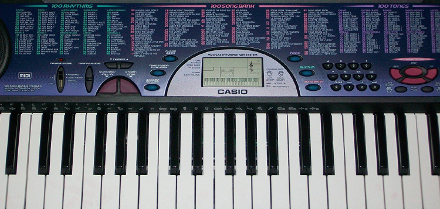

My inspiration for this project was the Casio CTK-451 which is a keyboard with 100 built in songs, beats, and tones. The size of the keyboard is 1 major scale starting at middle C, because of size limitations and simplicity, The consecutive white keys are a scale ex: Do Re Mi Fa Sol La Ti Do. The colored hover states on the keys are inspired by Synethstesia, which is a condition where people claim to see specific colors correlated to specific tones. There are 7 notes in a scale before tones start repeating, and there are 7 colors of the rainbow, which are the colors in sequence on the keyboard. This keyboard is a good tool to learn how to play music, through the incorporation of simple rhythms, tones, and songs.